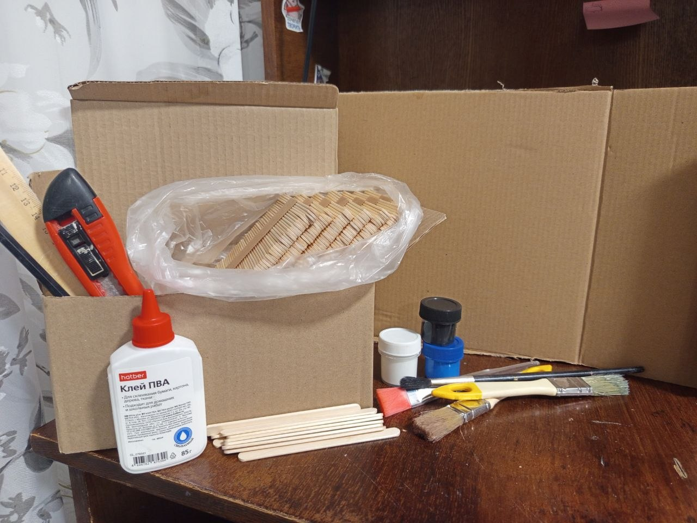
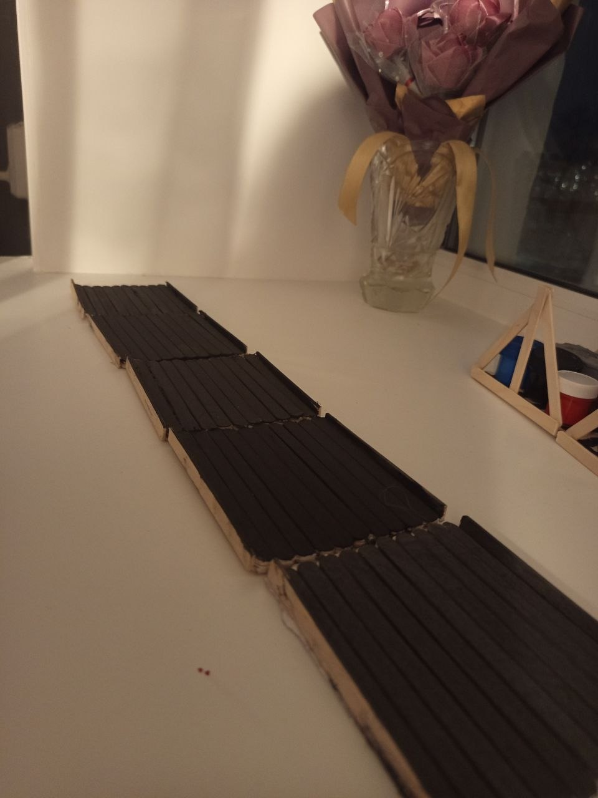
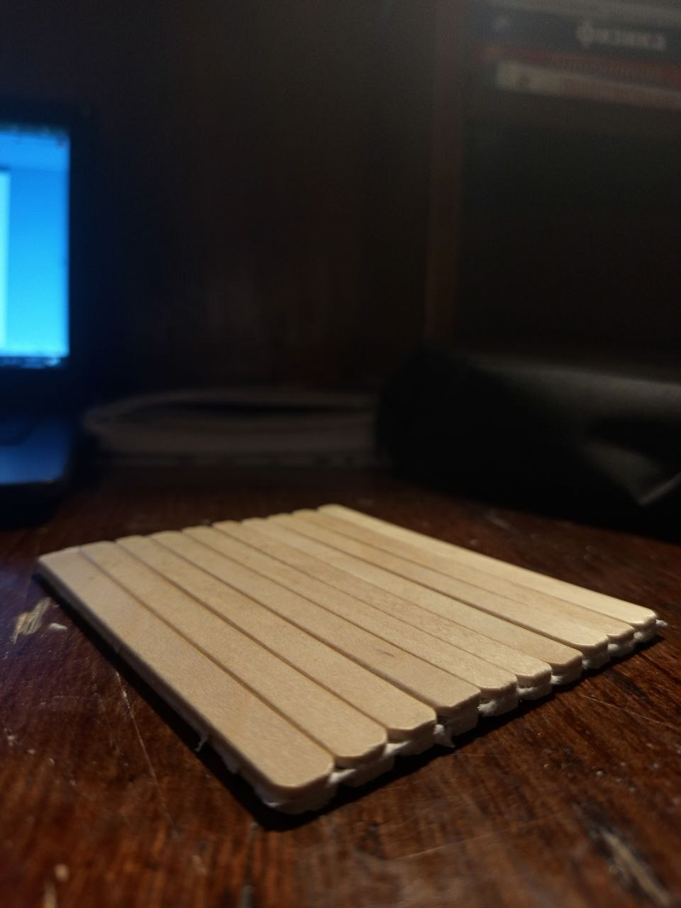
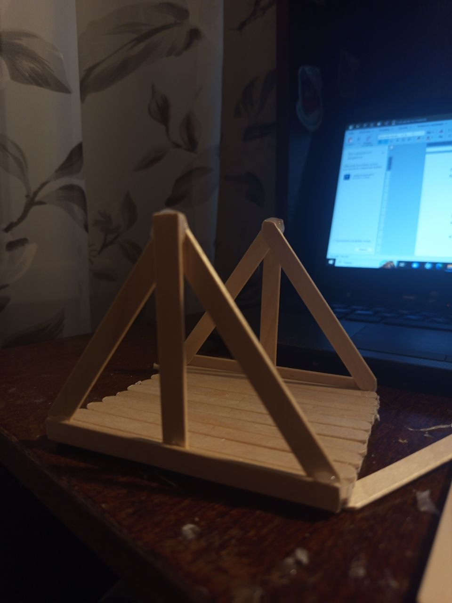
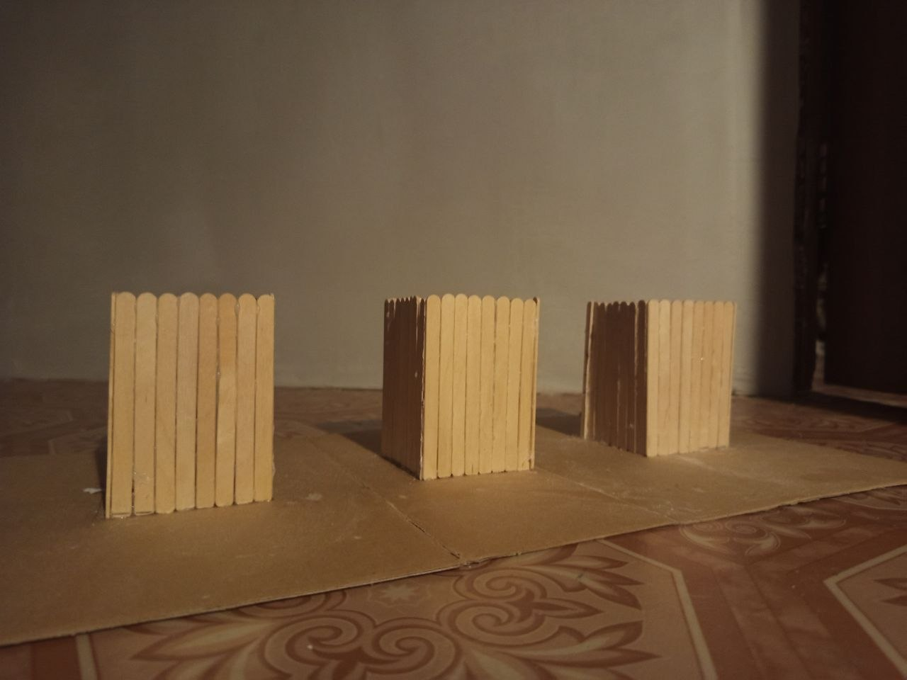
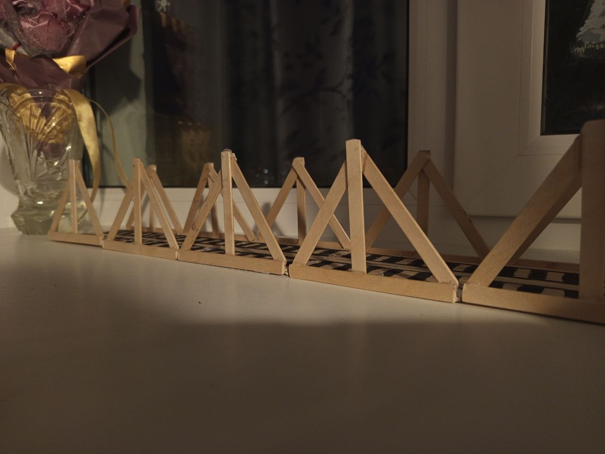
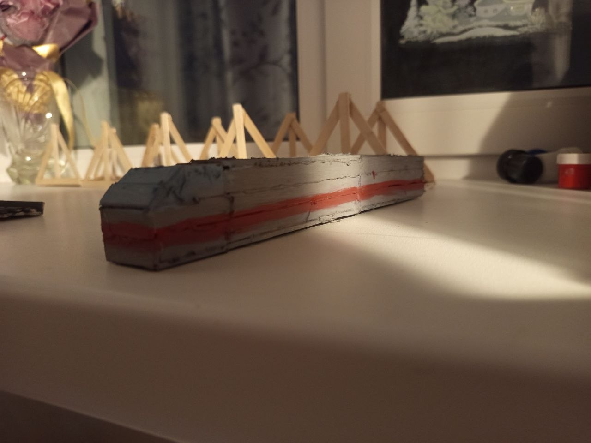
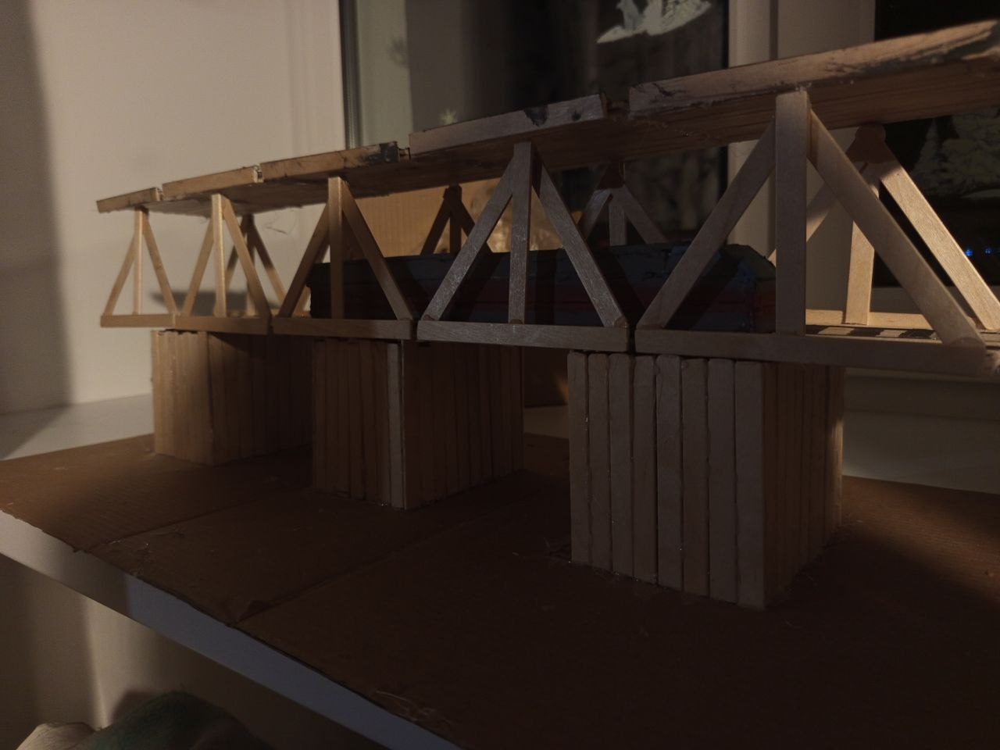

Этап 1: Подготовка и проектирование
Перед началом работы необходимо подготовить рабочее место и все материалы.
Что вам понадобится:
- Основной материал: Палочки от мороженого (понадобится много).
- Клей: ПВА, столярный клей (например, «Момент Столяр») и клеевой пистолет для быстрой фиксации критичных элементов.
- Инструменты: Канцелярский нож (резак), ножницы, мелкозернистая наждачная бумага, линейка, угольник, карандаш.
- Основа: Плотный картон, фанера или пенопласт для установки моста.
- Декор: Акриловые краски (серая, черная) и кисти. Можно использовать синий целлофан для имитации реки.

Проектирование:
Определите масштаб. При длине одной палочки около 11 см (примерно 5 палочек в длину), общая длина макета составит около 50 см. Обратите внимание на ключевые элементы моста:
- Фермы: Основные несущие конструкции по бокам с характерной решетчатой структурой.
- Опоры (быки): Массивные основания в воде.
- Пролетное строение: Полотно для поездов (нижний ярус) и автодорога (верхний ярус).


Этап 2: Сборка основных деталей
Работу следует проводить на ровной, защищенной поверхности.
1. Изготовление «досок»
Одной палочки для фермы не хватит. Склейте между собой 2-3 палочки пласть к пласти, чтобы получить прочные и длинные балки. Положите их под груз до полного высыхания.

2. Сборка ферм
Нарисуйте шаблон в натуральную величину. Наклеивайте палочки прямо на этот шаблон, повторяя рисунок решетки. Важно: сначала собирается внешний контур, затем заполняются внутренние перемычки. Сделайте 5 идентичных ферм.

3. Изготовление опор (быков)
Склейте палочки в виде массивных прямоугольников («колод») или усеченных пирамид. Для экономии материала их можно сделать полыми внутри.

Этап 3: Общая сборка макета
Сборку конструкции желательно вести от центра к краям.
- Закрепление опор: Разметьте на основе места для опор и приклейте их намертво.
- Соединение ферм: Склейте между собой две параллельные фермы горизонтальными балками (сверху и снизу).
- Монтаж секций: Установите собранные секции на опоры.
- Создание пролетного строения:
Нижний ярус (для поезда): Уложите палочки плотно друг к другу поперек между фермами.
Верхний ярус (автомобильный): Установите вертикальные стойки на фермы и смонтируйте поверх них еще одно полотно. - Детализация: Добавьте диагональные перемычки и перила по краям пролетов.

Этап 4: Отделка и покраска
- Грунтовка и шлифовка: Пройдитесь наждачной бумагой по всем неровностям. Покройте всю конструкцию слоем разведенного водой ПВА — это придаст дереву дополнительную прочность.
- Покраска: Выкрасите мост в серый цвет, имитируя металл и бетон.
- Оформление основы: Покрасьте "реку" в синий цвет или используйте декоративные материалы.
- Финальные штрихи: Установите на нижний ярус миниатюрную модельку поезда для масштаба и реалистичности.

💡 Советы и хитрости от автора
- Терпение: Обязательно давайте клею полностью высохнуть на каждом этапе сборки.
- Точность: Используйте пинцет для работы с мелкими деталями.
- Уникальность: Не бойтесь отклоняться от плана. Дерево — живой материал, возможны мелкие огрехи, но именно они придают макету рукотворный шарм.
- Сверка: Постоянно смотрите на фотографии оригинала.
- Совет для новичков: Если проект кажется слишком сложным, попробуйте сделать не весь мост, а одну характерную секцию с аркой.
Итог: Готовый макет моста
